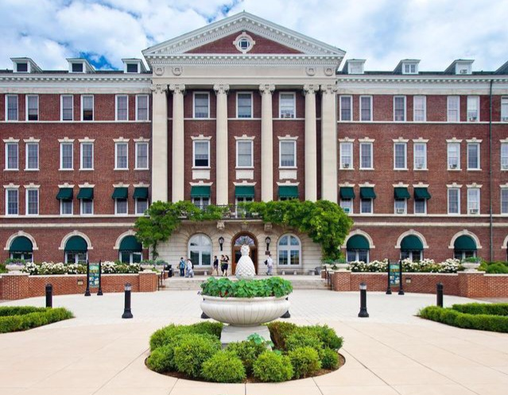
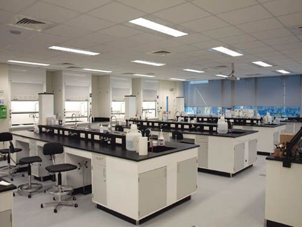
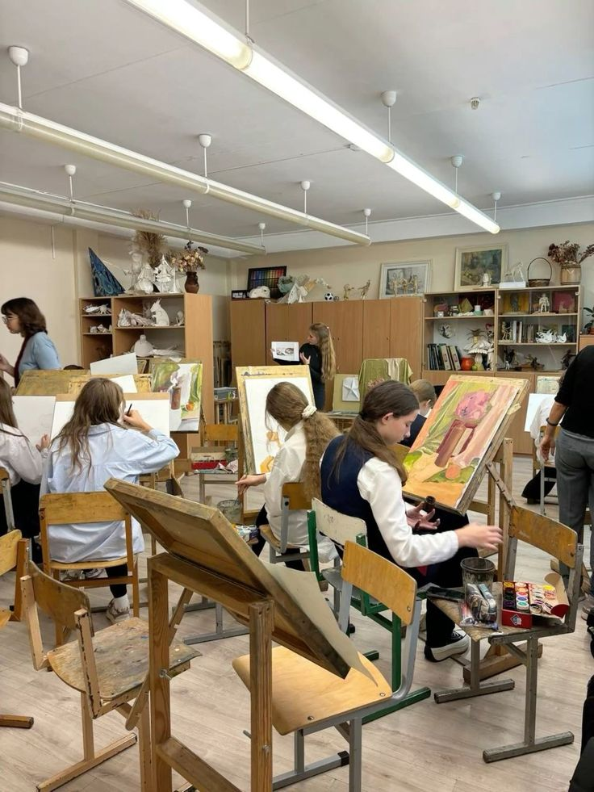
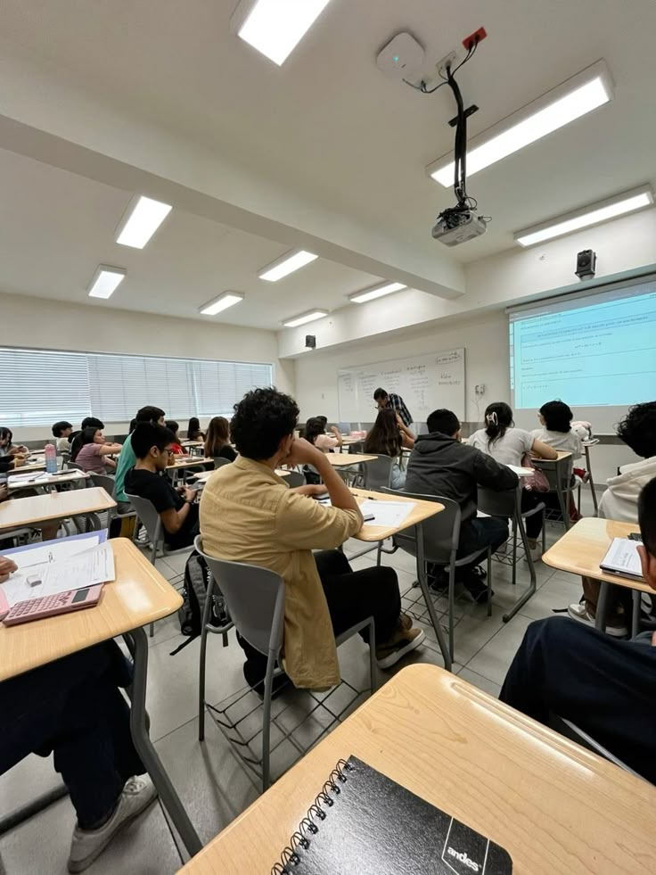

UNIVERSIDADE MARIA ANA MOGAS

A Universidade Maria Ana Mogas (U.M.A.M) foi fundada em 2014, na cidade de Maputo, fruto da visão de educadores e líderes comunitários inspirados pelos valores de Maria Ana Mogas, religiosa conhecida pela dedicação à educação e à promoção da dignidade humana.
Inicialmente, a U.M.A.M começou com duas faculdades – Ciências da Educação e Ciências Sociais –, acolhendo cerca de 350 estudantes no primeiro ano letivo. O objetivo era formar profissionais qualificados e comprometidos com o desenvolvimento de Moçambique, em um ambiente acadêmico baseado na ética, rigor científico e responsabilidade social.
Com o crescimento da procura e a confiança da comunidade, a U.M.A.M expandiu-se gradualmente. Em 2019, inaugurou a Faculdade de Saúde e Ciências Biomédicas, oferecendo cursos de Enfermagem e Medicina. Em 2024, foram introduzidos os cursos de Artes Plásticas e Comunicação Social.
Atualmente, a U.M.A.M conta com:
- 6 faculdades (Educação, Ciências Sociais, Saúde, Arte, Ciências e Tecnologias)
- Mais de 3.500 estudantes provenientes de todas as províncias de Moçambique
- Uma rede de parceiros nacionais e internacionais com universidades da África, Europa, Ásia e América Latina
A U.M.A.M orgulha-se de promover não apenas a excelência acadêmica, mas também a formação integral do estudante, incentivando a pesquisa, empreendedorismo, inovação e responsabilidade social.
O lema da Universidade:
"Educar para servir, inovar para transformar"

Na U.M.A.M, formamos os médicos do futuro com rigor, dedicação e tecnologia de ponta. Nossa infraestrutura moderna e professores altamente qualificados garantem um ambiente de aprendizagem inspirador, onde teoria e prática caminham lado a lado. Através de metodologias ativas, laboratórios bem equipados e foco na humanização da medicina, nossos estudantes estão preparados para enfrentar os desafios da saúde com competência e empatia.

Na U.M.A.M, a arte é uma forma essencial de conhecimento, expressão e transformação. Nossas salas de arte são espaços criativos que inspiram reflexão e dão voz à criatividade dos estudantes e docentes. Cada obra e detalhe reflete o compromisso da universidade com a valorização da arte como ferramenta educativa e crítica.

Nossa sala de informática está equipada com computadores modernos, internet de alta velocidade e softwares atualizados para apoiar os estudos e projetos dos alunos. O espaço proporciona um ambiente confortável e eficiente, ideal para pesquisa, trabalhos acadêmicos e desenvolvimento de competências digitais.
Está interessado?
Venha se cadastrar
Para mais informações:
Contacto: 82/87/841237126
Email: info@umam.com.mz
Localização: Maputo Cidade / Av. Josina Machel